All signs
390 UK sign faces, one card each. Open a card for the full item page, diagram reference and licence. Families are also listed under Signs.
ADJUST (Reviewer) 4, Drawn 230, Pending owner decision 4, Placeholder 146, Unverified source 6
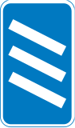
823Countdown marker — 300 yards to motorway exitDrawn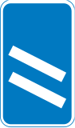
824Countdown marker — 200 yards to motorway exitDrawn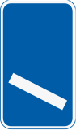
825Countdown marker — 100 yards to motorway exitDrawn2101Non-primary sign on approaches to junctions (family stand-in)Drawn2102Junction ahead of two non-primary routes, one of which leads to a primary routePlaceholder 2103Non-primary sign at the junctionPlaceholder
2103Non-primary sign at the junctionPlaceholder 2104Non-primary direction at a roundaboutPlaceholder
2104Non-primary direction at a roundaboutPlaceholder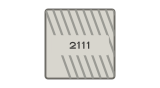
2111Non-primary direction to a placePlaceholder 2112Non-primary direction to a facilityPlaceholder
2112Non-primary direction to a facilityPlaceholder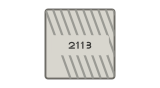
2113Non-primary confirmatory signPlaceholder 2114Junction ahead where one lane of a non-primary route is reserved for traffic turning to the rightPlaceholder
2114Junction ahead where one lane of a non-primary route is reserved for traffic turning to the rightPlaceholder 2115Non-primary direction with a primary-route panelPlaceholder2116Non-primary junction-name signPlaceholder
2115Non-primary direction with a primary-route panelPlaceholder2116Non-primary junction-name signPlaceholder 2117Non-primary lane-destination signPlaceholder
2117Non-primary lane-destination signPlaceholder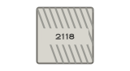
2118Non-primary overhead directionPlaceholder2120Double mini-roundabout ahead with exits to three non-primary routes, one of which leads to a car ferry and another is an advisory lorry routePlaceholder 2121Junction ahead of a non-primary route with another non-primary route leading to a town or village that has been by-passedPlaceholder
2121Junction ahead of a non-primary route with another non-primary route leading to a town or village that has been by-passedPlaceholder 2122Sharp bend in main route at a junction ahead with a minor roadPlaceholder
2122Sharp bend in main route at a junction ahead with a minor roadPlaceholder 2123Prohibited movement ahead on a non-primary route with an indication of a route avoiding that prohibitionPlaceholder
2123Prohibited movement ahead on a non-primary route with an indication of a route avoiding that prohibitionPlaceholder 2124Prohibited movement ahead on a non-primary route with an indication of a route avoiding that prohibitionPlaceholder
2124Prohibited movement ahead on a non-primary route with an indication of a route avoiding that prohibitionPlaceholder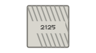
2125Non-primary ring-road directionPlaceholder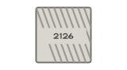
2126Non-primary town-centre directionPlaceholder 2127Non-primary diversion directionPlaceholder
2127Non-primary diversion directionPlaceholder 2128Non-primary distance and destinationPlaceholder2130Non-primary route forming part of a ring roadPlaceholder
2128Non-primary distance and destinationPlaceholder2130Non-primary route forming part of a ring roadPlaceholder 2601Route for pedestriansPlaceholder
2601Route for pedestriansPlaceholder 2601.1Direction of a numbered route for pedal cycles forming part of a national cycle route network at a junction aheadPlaceholder
2601.1Direction of a numbered route for pedal cycles forming part of a national cycle route network at a junction aheadPlaceholder 2602.1Cycle direction (variant)Placeholder
2602.1Cycle direction (variant)Placeholder 2602.2Numbered route for pedal cycles and electric scooters being used in a trial forming part of a regional (blue number patch) or national (red number patch) cycle route networkPlaceholder
2602.2Numbered route for pedal cycles and electric scooters being used in a trial forming part of a regional (blue number patch) or national (red number patch) cycle route networkPlaceholder 2603Junction ahead leading to a parking place for pedal cyclesPlaceholder
2603Junction ahead leading to a parking place for pedal cyclesPlaceholder 2604Direction and distance to a free parking place for pedal cyclesPlaceholder
2604Direction and distance to a free parking place for pedal cyclesPlaceholder 2605Direction to a bridlewayPlaceholder
2605Direction to a bridlewayPlaceholder 2606Direction to a bywayPlaceholder2607Direction of route to destination shown for pedestrians (as diagram 2605)Placeholder
2606Direction to a bywayPlaceholder2607Direction of route to destination shown for pedestrians (as diagram 2605)Placeholder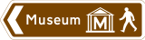
2608Direction of route to a tourist attraction for pedestriansPlaceholder2609Direction of route for pedestrians to a parking place associated with a tourist attractionPlaceholder 2610Direction to or along a public footpathPlaceholder
2610Direction to or along a public footpathPlaceholder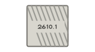
2610.1Direction to or along a public footpath (as diagram 2610)Placeholder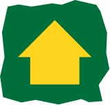
2610.2Direction along a public right of way, concessionary path or permissive path indicated by waymarksPlaceholder STREET_NAMEStreet-name plateDrawn
STREET_NAMEStreet-name plateDrawn 2701Direction and junction ahead to a new housing developmentDrawn
2701Direction and junction ahead to a new housing developmentDrawn 2702Start of temporary diversion routePlaceholder2703Direction of temporary diversion route from junction aheadPlaceholder
2702Start of temporary diversion routePlaceholder2703Direction of temporary diversion route from junction aheadPlaceholder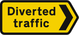
2704Direction of temporary diversion routePlaceholder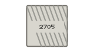
2705Junction ahead leading to temporary diversion routes to the destinations shownPlaceholder 2706Roundabout ahead leading to a temporary diversion route to the destination shownPlaceholder
2706Roundabout ahead leading to a temporary diversion route to the destination shownPlaceholder 2707Direction of temporary diversion route to destination shownPlaceholder
2707Direction of temporary diversion route to destination shownPlaceholder 2708Junction ahead leading to route for emergency vehicles to a temporary incident control pointPlaceholder
2708Junction ahead leading to route for emergency vehicles to a temporary incident control pointPlaceholder 2710Permanently mounted sign indicating a route for emergency vehicles to a named emergency services incident pointPlaceholder
2710Permanently mounted sign indicating a route for emergency vehicles to a named emergency services incident pointPlaceholder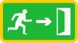
2711Direction to emergency exit for pedestrians from a tunnelPlaceholder 2712Location of fire rendezvous pointPlaceholder
2712Location of fire rendezvous pointPlaceholder 2713Direction to nearest emergency telephone on same side of the road(diagram shows blue background – for use on motorways)Placeholder
2713Direction to nearest emergency telephone on same side of the road(diagram shows blue background – for use on motorways)Placeholder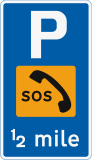
2713.1Distance ahead to emergency telephone in a parking place or emergency lay-byPlaceholder 2714Side of emergency telephone boxPlaceholder
2714Side of emergency telephone boxPlaceholder 2715Back of emergency telephone boxPlaceholder
2715Back of emergency telephone boxPlaceholder 2716Junction ahead leading to a temporary diversion route, the direction along which is indicated by a symbol shown in Part VII of Schedule 13Placeholder
2716Junction ahead leading to a temporary diversion route, the direction along which is indicated by a symbol shown in Part VII of Schedule 13Placeholder 2717Location on a primary route given by route number and direction of travel, and direction of nearest emergency telephonePlaceholder
2717Location on a primary route given by route number and direction of travel, and direction of nearest emergency telephonePlaceholder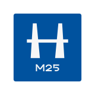
2901Start of motorway and point from which motorway regulations applyDrawn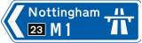
2902Motorway route confirmatory (with junctions)Placeholder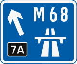
2902.1Motorway route confirmatory (variant)Placeholder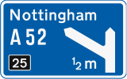
2903Motorway junction listPlaceholder 2904Motorway junction ahead, identified by the number shown on a black background, where the left hand lane of a motorway leads to another motorway and the other two lanes continue along the main motorway routePlaceholder
2904Motorway junction ahead, identified by the number shown on a black background, where the left hand lane of a motorway leads to another motorway and the other two lanes continue along the main motorway routePlaceholder 2904.1Motorway junction, identified by the number shown on a black background, where the left hand lane of a motorway leads to another motorway and the other two lanes continue along the main motorway routePlaceholder
2904.1Motorway junction, identified by the number shown on a black background, where the left hand lane of a motorway leads to another motorway and the other two lanes continue along the main motorway routePlaceholder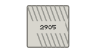
2905Two motorway junctions ahead in quick succession, identified by the number shown on a black background, leading to the destinations and routes shown. The number of lanes on the motorway remains the same through the junctionPlaceholder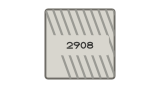
2908Motorway junction layoutPlaceholder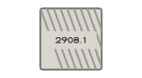
2908.1Motorway junction layout (variant)Placeholder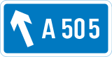
2910Motorway number confirmatoryPlaceholder 2911Motorway service areaPending owner decision
2911Motorway service areaPending owner decision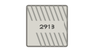
2913Roundabout ahead leading from a motorway exit slip road to a primary and a non-primary routePlaceholder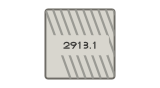
2913.1Roundabout ahead leading from a motorway exit slip road to another motorwayPlaceholder 2914Termination of a motorway at a roundabout ahead leading to two primary routes and a non-primary routePlaceholder
2914Termination of a motorway at a roundabout ahead leading to two primary routes and a non-primary routePlaceholder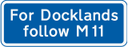
2915Route to be followed at junction ahead on a motorway for destinations that are not otherwise shown on signs for that junctionPlaceholder 2920Motorway hospitalPlaceholder2921Motorway policePlaceholder
2920Motorway hospitalPlaceholder2921Motorway policePlaceholder 2922Exit from a motorway for works traffic onlyPlaceholder
2922Exit from a motorway for works traffic onlyPlaceholder 2924Motorway junction ahead leading to the tourist attractions shownPlaceholder
2924Motorway junction ahead leading to the tourist attractions shownPlaceholder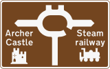
2925Roundabout ahead leading from a motorway exit slip road to the tourist attractions shownPlaceholder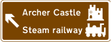
2926Junction ahead from a motorway exit slip road to the tourist attractions shownPlaceholder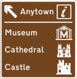
2927Motorway junction ahead leading to a town or geographical area containing a Tourist Information Point or Centre and several tourist attractionsPlaceholder 2928Motorway sign indicating the boundary of an administrative area, a ceremonial area or an historic county areaPlaceholder
2928Motorway sign indicating the boundary of an administrative area, a ceremonial area or an historic county areaPlaceholder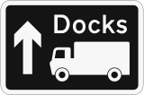
2929Motorway junction ahead leading to a route advised for goods vehicles to the destination shown, which may differ from that for other trafficPlaceholder 2930Regulations referred to in this column in respect of item 13 cease to apply aheadPlaceholder
2930Regulations referred to in this column in respect of item 13 cease to apply aheadPlaceholder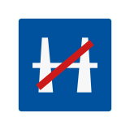
2931End of motorwayDrawn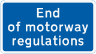
2932Entrance to a motorway service area, maintenance compound or similar facility contained within a length of a motorway and indicating that Regulations in force under section 17 of the 1984 Act cease to apply at this pointPlaceholderGANTRY_ADSMotorway overhead direction panel (family stand-in)Drawn 2025Primary-route sign on approaches to junctions (family stand-in)Drawn
2025Primary-route sign on approaches to junctions (family stand-in)Drawn 2026Primary-route advance direction (map type)Placeholder
2026Primary-route advance direction (map type)Placeholder 2027Primary-route sign at the junctionPlaceholder2028Primary-route direction (rectangular)Placeholder
2027Primary-route sign at the junctionPlaceholder2028Primary-route direction (rectangular)Placeholder 2029Directions to a primary route and a non-primary routePlaceholder
2029Directions to a primary route and a non-primary routePlaceholder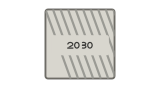
2030Primary-route direction at a roundaboutPlaceholder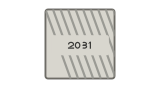
2031The number of a primary routePlaceholder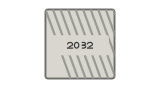
2032Primary route forming part of a ring roadPlaceholder2033Primary-route direction to parkingPlaceholder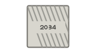
2034Route to be followed at junction ahead for destinations that are not otherwise shown on signs for that junctionPlaceholder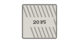
2035Direction along a primary route to destinations shown via a U-turn at a roundabout aheadPlaceholder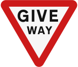
602Give way to traffic on major roadDrawn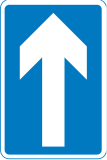
652One-way trafficDrawn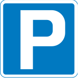
801Parking placeDrawn 804.1Parking place reserved for goods vehiclesPlaceholder
804.1Parking place reserved for goods vehiclesPlaceholder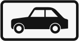
804.2Parking place reserved for motor carsPlaceholder 811Traffic has priority over oncoming vehicles (pre-2016 number)Drawn
811Traffic has priority over oncoming vehicles (pre-2016 number)Drawn 811APriority over oncoming vehiclesDrawn
811APriority over oncoming vehiclesDrawn 811BBeginning and end of section of road where traffic has priority over vehicles from the opposite directionDrawn
811BBeginning and end of section of road where traffic has priority over vehicles from the opposite directionDrawn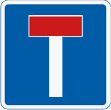
816No through road for vehiclesDrawn816.1No through road with street nameDrawn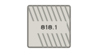
818.1Dual carriageway aheadDrawn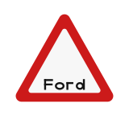
818.2Worded warning signPending owner decision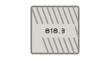
818.3Nature of and distance to a prohibition, restriction or requirement ahead (as diagram 818.2)Placeholder 818.4Advance warning of restriction or prohibition aheadDrawn
818.4Advance warning of restriction or prohibition aheadDrawn 820Route unsuitable for the vehicle shownDrawn
820Route unsuitable for the vehicle shownDrawn 821Single-track roadDrawn
821Single-track roadDrawn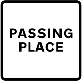
822Passing place on narrow roadPlaceholder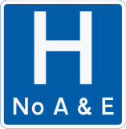
827.1Hospital aheadDrawn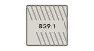
829.1Temporary hazard — reduce speedDrawn 832Location of traffic surveyPlaceholder
832Location of traffic surveyPlaceholder 833Signs regulating the movement of vehicular traffic into and out of premises with more than one access to a roadPlaceholder
833Signs regulating the movement of vehicular traffic into and out of premises with more than one access to a roadPlaceholder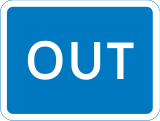
834Signs regulating the movement of vehicular traffic into and out of premises with more than one access to a roadPlaceholder 835Signs regulating the movement of vehicular traffic into and out of premises with more than one access to a roadPlaceholder
835Signs regulating the movement of vehicular traffic into and out of premises with more than one access to a roadPlaceholder 836Signs regulating the movement of vehicular traffic into and out of premises with more than one access to a roadPlaceholder
836Signs regulating the movement of vehicular traffic into and out of premises with more than one access to a roadPlaceholder 837Way in and way outPlaceholder
837Way in and way outPlaceholder 857Information for pedestrians about tourist attractions and facilities in a nearby place or areaPlaceholder
857Information for pedestrians about tourist attractions and facilities in a nearby place or areaPlaceholder 872Appropriate traffic lanes at junction aheadPlaceholder
872Appropriate traffic lanes at junction aheadPlaceholder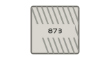
873Lane destination (all-purpose road)Drawn954.5Except buses and cyclesDrawn958With-flow bus lane ahead which pedal cycles and taxis may also useDrawn 958.1With-flow cycle lane aheadDrawn959With-flow bus and cycle lane (pre-2016 number)Drawn
958.1With-flow cycle lane aheadDrawn959With-flow bus and cycle lane (pre-2016 number)Drawn 959.1With-flow pedal cycle laneDrawn
959.1With-flow pedal cycle laneDrawn 959BWith-flow bus and cycle laneDrawn
959BWith-flow bus and cycle laneDrawn 960Contra-flow bus laneDrawn960.1Contra-flow cycle laneDrawn
960Contra-flow bus laneDrawn960.1Contra-flow cycle laneDrawn 962Bus lane on road at junction aheadDrawn
962Bus lane on road at junction aheadDrawn 962.1Cycle lane at a junction aheadDrawn
962.1Cycle lane at a junction aheadDrawn 962.2Contra-flow bus lane at a junction aheadDrawn963Look left / look rightDrawn
962.2Contra-flow bus lane at a junction aheadDrawn963Look left / look rightDrawn 964End of with-flow bus lanePlaceholder
964End of with-flow bus lanePlaceholder 965End of cycle lane, track or routePlaceholder967Recommended route for pedal cyclesDrawn
965End of cycle lane, track or routePlaceholder967Recommended route for pedal cyclesDrawn 968Parking place for pedal cyclesPlaceholder968.1Parking place for pedal cyclesPlaceholder969Parking place reserved for busesDrawn974Stopping by vehicles other than buses prohibited during the period indicatedPlaceholder
968Parking place for pedal cyclesPlaceholder968.1Parking place for pedal cyclesPlaceholder969Parking place reserved for busesDrawn974Stopping by vehicles other than buses prohibited during the period indicatedPlaceholder 975Place where buses may stand and the stopping of other vehicles is prohibited during the period indicatedPlaceholder606Ahead onlyDrawn609Turn left ahead (right if symbol reversed)Drawn
975Place where buses may stand and the stopping of other vehicles is prohibited during the period indicatedPlaceholder606Ahead onlyDrawn609Turn left ahead (right if symbol reversed)Drawn 610Keep left (right if symbol reversed)Drawn611Vehicles may pass either side to reach the same destinationDrawn611.1Mini-roundaboutDrawn953Buses, pedal cycles and taxis onlyDrawn
610Keep left (right if symbol reversed)Drawn611Vehicles may pass either side to reach the same destinationDrawn611.1Mini-roundaboutDrawn953Buses, pedal cycles and taxis onlyDrawn 953.1Trams onlyDrawn
953.1Trams onlyDrawn 953.2Pedestrian crossing point over tramwayPending owner decision
953.2Pedestrian crossing point over tramwayPending owner decision 954Except busesDrawn954.2Local buses excluded from restriction or prohibition conveyed by associated signDrawn
954Except busesDrawn954.2Local buses excluded from restriction or prohibition conveyed by associated signDrawn 955Route to be used by pedal cycles onlyDrawn956Route for use by pedal cycles and pedestrians onlyDrawn957Segregated cycle and pedestrian routeDrawn
955Route to be used by pedal cycles onlyDrawn956Route for use by pedal cycles and pedestrians onlyDrawn957Segregated cycle and pedestrian routeDrawn MARKERDriver location markerPending owner decisionMS4Motorway matrix signalDrawn671National speed limit appliesDrawn4002Nearside pedestrian demand unitPlaceholder4002.1Farside pedestrian signalDrawn4003Instructions to pedestrians at the push-buttonDrawn
MARKERDriver location markerPending owner decisionMS4Motorway matrix signalDrawn671National speed limit appliesDrawn4002Nearside pedestrian demand unitPlaceholder4002.1Farside pedestrian signalDrawn4003Instructions to pedestrians at the push-buttonDrawn 4003.1Nearside light signals and instructions for pedestrians at a pedestrian facility controlled by traffic light signalsPlaceholder4003.2Farside light signals for equestrian trafficPlaceholder4003.3Instructions to horse riders above the push button control for calling up equestrian traffic phases at traffic light signalsPlaceholder4003.4Nearside light signals and instructions for horse riders at an equestrian traffic crossing facility controlled by traffic light signalsPlaceholder4003.5Farside light signals for pedestrians, drivers of electric scooters being used in a trial and cyclists at a Toucan crossingPlaceholder
4003.1Nearside light signals and instructions for pedestrians at a pedestrian facility controlled by traffic light signalsPlaceholder4003.2Farside light signals for equestrian trafficPlaceholder4003.3Instructions to horse riders above the push button control for calling up equestrian traffic phases at traffic light signalsPlaceholder4003.4Nearside light signals and instructions for horse riders at an equestrian traffic crossing facility controlled by traffic light signalsPlaceholder4003.5Farside light signals for pedestrians, drivers of electric scooters being used in a trial and cyclists at a Toucan crossingPlaceholder 4003.6(a) instructions to pedestrians, drivers of electric scooters being used in a trial and cyclists above the push button control for calling up pedestrian and cycle phases at a Toucan crossing; or (b) instructions to cyclists above the push button control for calling up cycle phases at a crossing controlled by the traffic light signals provided for at item 3 or 4Placeholder
4003.6(a) instructions to pedestrians, drivers of electric scooters being used in a trial and cyclists above the push button control for calling up pedestrian and cycle phases at a Toucan crossing; or (b) instructions to cyclists above the push button control for calling up cycle phases at a crossing controlled by the traffic light signals provided for at item 3 or 4Placeholder 4003.7Nearside light signals and instructions for pedestrians, drivers of electric scooters being used in a trial and cyclists at a Toucan crossingPlaceholder
4003.7Nearside light signals and instructions for pedestrians, drivers of electric scooters being used in a trial and cyclists at a Toucan crossingPlaceholder 4007Belisha beaconDrawn
4007Belisha beaconDrawn BELISHABelisha beacon (pre-2016 id)DrawnXING_PARBelisha beacon (diagram 4007) at a parallel crossingDrawn546School ahead (plate)Drawn607One-way traffic (plate)Drawn608Dual carriagewayDrawn811.1Priority over oncoming vehicles (plate for diagram 811)Drawn
BELISHABelisha beacon (pre-2016 id)DrawnXING_PARBelisha beacon (diagram 4007) at a parallel crossingDrawn546School ahead (plate)Drawn607One-way traffic (plate)Drawn608Dual carriagewayDrawn811.1Priority over oncoming vehicles (plate for diagram 811)Drawn 605.3School crossing patrolDrawn612No right turnDrawn
605.3School crossing patrolDrawn612No right turnDrawn 613No left turnDrawn
613No left turnDrawn 614No U-turnsDrawn
614No U-turnsDrawn 615Give priority to vehicles from opposite directionDrawn616No entry for vehicular trafficDrawn
615Give priority to vehicles from opposite directionDrawn616No entry for vehicular trafficDrawn 617No vehicles except bicycles being pushedDrawn618Play streetDrawn618.1All vehicles prohibited during the period indicated except for accessDrawn
617No vehicles except bicycles being pushedDrawn618Play streetDrawn618.1All vehicles prohibited during the period indicated except for accessDrawn 618.2Pedestrian zone (times)Drawn
618.2Pedestrian zone (times)Drawn 618.3Pedestrian zone (except buses)Drawn
618.3Pedestrian zone (except buses)Drawn 618.3APedestrian zone (except loading)Drawn
618.3APedestrian zone (except loading)Drawn 618.3BPedestrian and waiting zoneDrawn618.3CPedestrian and cycle zoneDrawn
618.3BPedestrian and waiting zoneDrawn618.3CPedestrian and cycle zoneDrawn 618.4End of pedestrian zoneDrawn619No motor vehiclesDrawn619.1No motor vehicles except solo motorcyclesDrawn619.2No solo motorcyclesDrawn622.1ANo goods vehicles over maximum gross weight shownDrawn622.2End of goods-vehicle prohibitionDrawn
618.4End of pedestrian zoneDrawn619No motor vehiclesDrawn619.1No motor vehicles except solo motorcyclesDrawn619.2No solo motorcyclesDrawn622.1ANo goods vehicles over maximum gross weight shownDrawn622.2End of goods-vehicle prohibitionDrawn 622.4No articulated vehiclesADJUST (Reviewer)622.5No horse-drawn vehiclesDrawn
622.4No articulated vehiclesADJUST (Reviewer)622.5No horse-drawn vehiclesDrawn 622.6No ridden or accompanied horsesDrawn622.7No towed caravansDrawn
622.6No ridden or accompanied horsesDrawn622.7No towed caravansDrawn 622.8No vehicles carrying explosivesDrawn622.9Vehicles carrying explosives prohibited (as diagram 622.8)Drawn625.1No pedestriansDrawn
622.8No vehicles carrying explosivesDrawn622.9Vehicles carrying explosives prohibited (as diagram 622.8)Drawn625.1No pedestriansDrawn 626.2ANo vehicles over maximum gross weight shownDrawn
626.2ANo vehicles over maximum gross weight shownDrawn 627.1Exemption for unladen vehicles from the prohibition conveyed by the sign in diagram 626.2ADrawn
627.1Exemption for unladen vehicles from the prohibition conveyed by the sign in diagram 626.2ADrawn 629No vehicles over width shown (pre-2016 number)Drawn
629No vehicles over width shown (pre-2016 number)Drawn 629.1No vehicle or combination of vehicles over length shownDrawn
629.1No vehicle or combination of vehicles over length shownDrawn 629.2No vehicles over height shown (imperial)Drawn
629.2No vehicles over height shown (imperial)Drawn 629.2ANo vehicles over height shownDrawn
629.2ANo vehicles over height shownDrawn 629ANo vehicles over the width shownDrawn632No overtakingDrawn636Temporary no waiting except loadingDrawn
629ANo vehicles over the width shownDrawn632No overtakingDrawn636Temporary no waiting except loadingDrawn 637.1No waiting except as shownDrawn
637.1No waiting except as shownDrawn 637.2No waiting (times)Drawn637.3No waiting except loadingDrawn
637.2No waiting (times)Drawn637.3No waiting except loadingDrawn 638Continuous prohibition on loading and unloadingADJUST (Reviewer)638.1No loading during the times shownDrawn
638Continuous prohibition on loading and unloadingADJUST (Reviewer)638.1No loading during the times shownDrawn 639Waiting limited to the period shownDrawn
639Waiting limited to the period shownDrawn 639.1BWaiting prohibited during the periods indicated on the upper panel and restrictions on waiting during the period indicated on the lower panelDrawn640No stopping during period indicated except for busesDrawn
639.1BWaiting prohibited during the periods indicated on the upper panel and restrictions on waiting during the period indicated on the lower panelDrawn640No stopping during period indicated except for busesDrawn 640.1No waiting or loading at a parking placeDrawn
640.1No waiting or loading at a parking placeDrawn 640.2AWaiting by goods vehicles over maximum gross weight shown prohibited during the periods and in the direction indicatedDrawn640.3Entrance to a designated off-highway loading area in which waiting restrictions applyDrawn640.4Waiting prohibited in a designated off-highway loading area during the period indicated except by permitted vehiclesDrawn
640.2AWaiting by goods vehicles over maximum gross weight shown prohibited during the periods and in the direction indicatedDrawn640.3Entrance to a designated off-highway loading area in which waiting restrictions applyDrawn640.4Waiting prohibited in a designated off-highway loading area during the period indicated except by permitted vehiclesDrawn 640.5End of designated loading areaDrawn642No stopping (Clearway)Drawn
640.5End of designated loading areaDrawn642No stopping (Clearway)Drawn 642.2School crossing patrol (pre-2016 number)Drawn642.3No stopping in lay-by except in emergencyDrawn646Urban clearwayDrawn647End of urban clearwayDrawn649.2No stopping except taxis (times)Unverified source650.1Prohibition on stopping by vehicles other than taxis during the period indicatedDrawn650.2Prohibition on waiting by vehicles other than taxis during the period indicatedDrawn
642.2School crossing patrol (pre-2016 number)Drawn642.3No stopping in lay-by except in emergencyDrawn646Urban clearwayDrawn647End of urban clearwayDrawn649.2No stopping except taxis (times)Unverified source650.1Prohibition on stopping by vehicles other than taxis during the period indicatedDrawn650.2Prohibition on waiting by vehicles other than taxis during the period indicatedDrawn 650.3Continuous prohibition on waiting by vehicles with an exemption for taxis during the period indicatedDrawn
650.3Continuous prohibition on waiting by vehicles with an exemption for taxis during the period indicatedDrawn 651Mown-verge use prohibitedDrawn
651Mown-verge use prohibitedDrawn 660Parking place reserved for permit holdersDrawn660.3Parking place reserved for holders of residents' permitsDrawn660.4Loading onlyDrawn660.5Parking for the period shownADJUST (Reviewer)660.6Parking place (ticket)Drawn
660Parking place reserved for permit holdersDrawn660.3Parking place reserved for holders of residents' permitsDrawn660.4Loading onlyDrawn660.5Parking for the period shownADJUST (Reviewer)660.6Parking place (ticket)Drawn 660.7Parking place (voucher)Drawn
660.7Parking place (voucher)Drawn 661.1Restrictions on length of waiting time and return periodDrawn661.2A'Pay and Display' ticket-regulated parking placeDrawn
661.1Restrictions on length of waiting time and return periodDrawn661.2A'Pay and Display' ticket-regulated parking placeDrawn 661.3ALocation of 'Pay and Display' ticket machineDrawn
661.3ALocation of 'Pay and Display' ticket machineDrawn 661.4Drivers must obtain and display parking ticketsADJUST (Reviewer)
661.4Drivers must obtain and display parking ticketsADJUST (Reviewer) 662Period during which waiting is limited and display of a disc is required at a parking place in a disc zoneDrawn
662Period during which waiting is limited and display of a disc is required at a parking place in a disc zoneDrawn 667Parking partly on the verge or footwayDrawn667.1Parking partly on the verge (times)Drawn
667Parking partly on the verge or footwayDrawn667.1Parking partly on the verge (times)Drawn 667.2End of verge parking (part)Drawn668Parking wholly on the verge or footwayDrawn
667.2End of verge parking (part)Drawn668Parking wholly on the verge or footwayDrawn 668.1Parking wholly on the verge (times)Drawn668.2End of verge parking (whole)Drawn
668.1Parking wholly on the verge (times)Drawn668.2End of verge parking (whole)Drawn 670Maximum speedDrawn672Minimum speedDrawn673End of minimum speedDrawn
670Maximum speedDrawn672Minimum speedDrawn673End of minimum speedDrawn 674Entry to 20 mph zoneDrawn
674Entry to 20 mph zoneDrawn 675End of 20 mph zoneDrawn675AEnd of 20 mph zone, new limit beginsDrawn675BIn relation to England, end of a 20 mph speed limit zone with indication that national speed limits applyDrawn818.5Low bridge — alternative routeDrawn878Area in which cameras are used to enforce traffic regulationsDrawn
675End of 20 mph zoneDrawn675AEnd of 20 mph zone, new limit beginsDrawn675BIn relation to England, end of a 20 mph speed limit zone with indication that national speed limits applyDrawn818.5Low bridge — alternative routeDrawn878Area in which cameras are used to enforce traffic regulationsDrawn 880Speed camera on a lit road with a 30 mph reminderDrawn951No cyclingDrawn
880Speed camera on a lit road with a 30 mph reminderDrawn951No cyclingDrawn 952No buses (over 8 passenger seats)Drawn
952No buses (over 8 passenger seats)Drawn 3000Traffic light signalsDrawn3000.2Traffic light signals for the control of vehicular traffic consisting solely of pedal cycles and electric scooters being used in a trialPlaceholder3000.7Traffic light signals as diagram 3000 with additional signals placed in any of the positions marked 1, 2, 3 and 4Placeholder3001Traffic signal with a box signPlaceholder
3000Traffic light signalsDrawn3000.2Traffic light signals for the control of vehicular traffic consisting solely of pedal cycles and electric scooters being used in a trialPlaceholder3000.7Traffic light signals as diagram 3000 with additional signals placed in any of the positions marked 1, 2, 3 and 4Placeholder3001Traffic signal with a box signPlaceholder 3001.2Green arrow to show the direction for vehicular traffic to take for inclusion in traffic light signals as described in Part 1Placeholder
3001.2Green arrow to show the direction for vehicular traffic to take for inclusion in traffic light signals as described in Part 1Placeholder 3013Light signal for control of tramcars (diagram shows the light signal fully illuminated- see items 3 to 7 for the illumination of the signal to convey particular descriptions)Placeholder
3013Light signal for control of tramcars (diagram shows the light signal fully illuminated- see items 3 to 7 for the illumination of the signal to convey particular descriptions)Placeholder 3013.1Tramcar must not proceed beyond the stop linePlaceholder
3013.1Tramcar must not proceed beyond the stop linePlaceholder 3013.2Tramcar may proceed beyond the stopline and proceed straight aheadPlaceholder3013.3Tramcar may proceed beyond the stopline and proceed to the leftPlaceholder3013.4Tramcar may proceed beyond the stopline and proceed to the rightPlaceholder3013.5Tramcar must not proceed beyond the stop line except that, as respects a tramcar which is so close to the stop line that it cannot safely be stopped without proceeding beyond the stop line, it conveys the same indication as the aspect which was shown immediately before itPlaceholder3014Flashing red lights at level crossings, airfields or bridgesDrawn601.1Stop and give wayDrawn2201Distance ahead to a tourist attractionPlaceholder2202Tourist attraction (family stand-in)Drawn2203Direction and distance to a tourist attractionPlaceholder2204Direction and distance to a Tourist Information Point or CentrePlaceholder2205Sign on a primary or non-primary route indicating location of a Tourist Information Centre or PointPlaceholder2206Tourist attraction aheadPlaceholder2207Tourist attraction (direction)Placeholder2208Direction to a tourist attraction indicated by a symbolPlaceholder2209Distance ahead to a tourist attractionPlaceholder
3013.2Tramcar may proceed beyond the stopline and proceed straight aheadPlaceholder3013.3Tramcar may proceed beyond the stopline and proceed to the leftPlaceholder3013.4Tramcar may proceed beyond the stopline and proceed to the rightPlaceholder3013.5Tramcar must not proceed beyond the stop line except that, as respects a tramcar which is so close to the stop line that it cannot safely be stopped without proceeding beyond the stop line, it conveys the same indication as the aspect which was shown immediately before itPlaceholder3014Flashing red lights at level crossings, airfields or bridgesDrawn601.1Stop and give wayDrawn2201Distance ahead to a tourist attractionPlaceholder2202Tourist attraction (family stand-in)Drawn2203Direction and distance to a tourist attractionPlaceholder2204Direction and distance to a Tourist Information Point or CentrePlaceholder2205Sign on a primary or non-primary route indicating location of a Tourist Information Centre or PointPlaceholder2206Tourist attraction aheadPlaceholder2207Tourist attraction (direction)Placeholder2208Direction to a tourist attraction indicated by a symbolPlaceholder2209Distance ahead to a tourist attractionPlaceholder 2210Junction ahead leading to or along a route passing through places of interestPlaceholder2301Picnic sitePlaceholder
2210Junction ahead leading to or along a route passing through places of interestPlaceholder2301Picnic sitePlaceholder 2302Direction and distance to a camping and caravan site as defined in the caption under diagram 2301Placeholder2303Sign on a primary or non-primary route indicating distance and direction to a hostelPlaceholder2304Direction and distance to a hostel as defined in the caption under diagram 2303Placeholder2305Sign on a primary or non-primary route indicating distance and direction to a picnic areaPlaceholder2306Direction and distance to a picnic areaPlaceholder2307Sign on a primary or non-primary route indicating distance ahead to a parking place with public toilets that has facilities for disabled persons, Tourist Information Centre or Point, public telephone, picnic area and viewpointPlaceholder2308Nature reservePlaceholder2310Leisure facilityPlaceholder
2302Direction and distance to a camping and caravan site as defined in the caption under diagram 2301Placeholder2303Sign on a primary or non-primary route indicating distance and direction to a hostelPlaceholder2304Direction and distance to a hostel as defined in the caption under diagram 2303Placeholder2305Sign on a primary or non-primary route indicating distance and direction to a picnic areaPlaceholder2306Direction and distance to a picnic areaPlaceholder2307Sign on a primary or non-primary route indicating distance ahead to a parking place with public toilets that has facilities for disabled persons, Tourist Information Centre or Point, public telephone, picnic area and viewpointPlaceholder2308Nature reservePlaceholder2310Leisure facilityPlaceholder 2311Sports stadiumPlaceholder2313Theme parkPlaceholder
2311Sports stadiumPlaceholder2313Theme parkPlaceholder 2314Wildlife parkPlaceholder2315Beach or coastal attractionPlaceholder
2314Wildlife parkPlaceholder2315Beach or coastal attractionPlaceholder 2316Tourist trailPlaceholder504.1CrossroadsDrawn505.1T-junction aheadDrawn506.1Side road aheadDrawn507.1Staggered junctionDrawn508.1Traffic merging from the leftDrawn509.1Traffic merging onto the main carriagewayDrawn510RoundaboutDrawn512Bend to right (or left if symbol reversed)Drawn512.1Junction on the outside of a bend aheadDrawn512.2Junction on the inside of a bend aheadDrawn513Double bend first to left (symbol may be reversed)Drawn513.1Adverse camber on a bend or roundaboutDrawn
2316Tourist trailPlaceholder504.1CrossroadsDrawn505.1T-junction aheadDrawn506.1Side road aheadDrawn507.1Staggered junctionDrawn508.1Traffic merging from the leftDrawn509.1Traffic merging onto the main carriagewayDrawn510RoundaboutDrawn512Bend to right (or left if symbol reversed)Drawn512.1Junction on the outside of a bend aheadDrawn512.2Junction on the inside of a bend aheadDrawn513Double bend first to left (symbol may be reversed)Drawn513.1Adverse camber on a bend or roundaboutDrawn 513.2Maximum speed advised at a bendDrawn516Road narrows on both sidesDrawn517Road narrows on right (left if symbol reversed)Drawn521Two-way traffic straight aheadDrawn522Two-way traffic crosses one-way roadDrawn
513.2Maximum speed advised at a bendDrawn516Road narrows on both sidesDrawn517Road narrows on right (left if symbol reversed)Drawn521Two-way traffic straight aheadDrawn522Two-way traffic crosses one-way roadDrawn 523.1Steep hill downwardsDrawn524.1Steep hill upwardsDrawn526Opening or swing bridge ahead (pre-2016 number)Drawn528Hump bridgeDrawn529Opening or swing bridge aheadDrawn529.1Tunnel aheadDrawn530Maximum headroom (pre-2016 number)Drawn
523.1Steep hill downwardsDrawn524.1Steep hill upwardsDrawn526Opening or swing bridge ahead (pre-2016 number)Drawn528Hump bridgeDrawn529Opening or swing bridge aheadDrawn529.1Tunnel aheadDrawn530Maximum headroom (pre-2016 number)Drawn 530.1Reduced headroom under an overhanging structureDrawn530AMaximum headroomDrawn
530.1Reduced headroom under an overhanging structureDrawn530AMaximum headroomDrawn 531.1Maximum headroom at an arch bridge (pre-2016 number)Drawn
531.1Maximum headroom at an arch bridge (pre-2016 number)Drawn 531.1AMaximum headroom at an arch bridgeDrawn531.2High vehicles use the middle of the road at an arch bridgeDrawn
531.1AMaximum headroom at an arch bridgeDrawn531.2High vehicles use the middle of the road at an arch bridgeDrawn 532.2Arch bridgeDrawn532.3Available width at an arch bridgeDrawn
532.2Arch bridgeDrawn532.3Available width at an arch bridgeDrawn 543Traffic signalsDrawn544Zebra crossingDrawn544.1Pedestrians in road aheadDrawn544.2Frail pedestrians likely to cross road aheadDrawn545Children going to or from schoolDrawn548CattleDrawn
543Traffic signalsDrawn544Zebra crossingDrawn544.1Pedestrians in road aheadDrawn544.2Frail pedestrians likely to cross road aheadDrawn545Children going to or from schoolDrawn548CattleDrawn 548.1Supervised cattle crossingDrawn549SheepDrawn550Wild horses or poniesDrawn550.1Accompanied horses or poniesDrawn550.2Horse-drawn vehiclesDrawn551Wild animalsDrawn551.1Migratory toad crossingDrawn551.2Wild fowlDrawn552Cattle gridDrawn553.1Agricultural vehiclesDrawn
548.1Supervised cattle crossingDrawn549SheepDrawn550Wild horses or poniesDrawn550.1Accompanied horses or poniesDrawn550.2Horse-drawn vehiclesDrawn551Wild animalsDrawn551.1Migratory toad crossingDrawn551.2Wild fowlDrawn552Cattle gridDrawn553.1Agricultural vehiclesDrawn 553.2Agricultural vehicles likely to be in road aheadDrawn554FordDrawn554.1Try your brakesDrawn554.2Risk of iceDrawn555Quayside or river bankDrawn556Uneven roadDrawn556.1Soft vergesDrawn557Slippery roadDrawn558Low-flying aircraft or sudden aircraft noiseDrawn559Falling or fallen rocksDrawn562Other danger; plate indicates nature of dangerDrawn572Distance to hazardDrawn
553.2Agricultural vehicles likely to be in road aheadDrawn554FordDrawn554.1Try your brakesDrawn554.2Risk of iceDrawn555Quayside or river bankDrawn556Uneven roadDrawn556.1Soft vergesDrawn557Slippery roadDrawn558Low-flying aircraft or sudden aircraft noiseDrawn559Falling or fallen rocksDrawn562Other danger; plate indicates nature of dangerDrawn572Distance to hazardDrawn 573Distance and direction to hazardDrawn
573Distance and direction to hazardDrawn 574Distance over which hazard extendsUnverified source
574Distance over which hazard extendsUnverified source 575Oncoming vehicles in the middle of the roadDrawn581Side windsDrawn582Slow-moving military vehiclesDrawn583Slow-moving vehicles on an inclineDrawn584Traffic queues likely aheadDrawn770Level crossing with barrier or gate aheadDrawn
575Oncoming vehicles in the middle of the roadDrawn581Side windsDrawn582Slow-moving military vehiclesDrawn583Slow-moving vehicles on an inclineDrawn584Traffic queues likely aheadDrawn770Level crossing with barrier or gate aheadDrawn 771Level crossing without barrier or gate aheadDrawn772Trams crossing aheadDrawn
771Level crossing without barrier or gate aheadDrawn772Trams crossing aheadDrawn 773Light signals ahead at a level crossing, airfield or bridgeDrawn774Level crossing without barrierDrawn
773Light signals ahead at a level crossing, airfield or bridgeDrawn774Level crossing without barrierDrawn 775Keep the crossing clearDrawn776Another train or tramcar may be about to pass over the crossing. Level crossing ahead is crossed by more than one railway or tramway track, and more than one train or tramcar may pass over it in quick successionPlaceholder777Another train comingDrawn778Open level crossingDrawn779Overhead electric cableDrawn780.1Safe height under electrified cables (metric)Unverified source
775Keep the crossing clearDrawn776Another train or tramcar may be about to pass over the crossing. Level crossing ahead is crossed by more than one railway or tramway track, and more than one train or tramcar may pass over it in quick successionPlaceholder777Another train comingDrawn778Open level crossingDrawn779Overhead electric cableDrawn780.1Safe height under electrified cables (metric)Unverified source 780.2Safe height under electrified cables (imperial)Unverified source781Load gauge giving audible warning to drivers where vehicles exceed safe height under electrified overhead cablesPlaceholder782Risk of groundingDrawn783Long, low, large or slow vehicles must telephone before crossingDrawn
780.2Safe height under electrified cables (imperial)Unverified source781Load gauge giving audible warning to drivers where vehicles exceed safe height under electrified overhead cablesPlaceholder782Risk of groundingDrawn783Long, low, large or slow vehicles must telephone before crossingDrawn 784Level-crossing countdown — 2 stripesUnverified source
784Level-crossing countdown — 2 stripesUnverified source 785Level-crossing countdown — 1 stripeUnverified source786Waiting place for long or low vehiclesDrawn787Telephone at a railway or tramway crossingDrawn
785Level-crossing countdown — 1 stripeUnverified source786Waiting place for long or low vehiclesDrawn787Telephone at a railway or tramway crossingDrawn 788Direction to a crossing telephoneDrawn
788Direction to a crossing telephoneDrawn 883Start of a traffic-calming areaDrawn
883Start of a traffic-calming areaDrawn 884Quiet laneDrawn
884Quiet laneDrawnFaces marked from GOV.UK: traffic sign images © Crown copyright (Department for Transport), Open Government Licence v3.0; converted from the EPS.